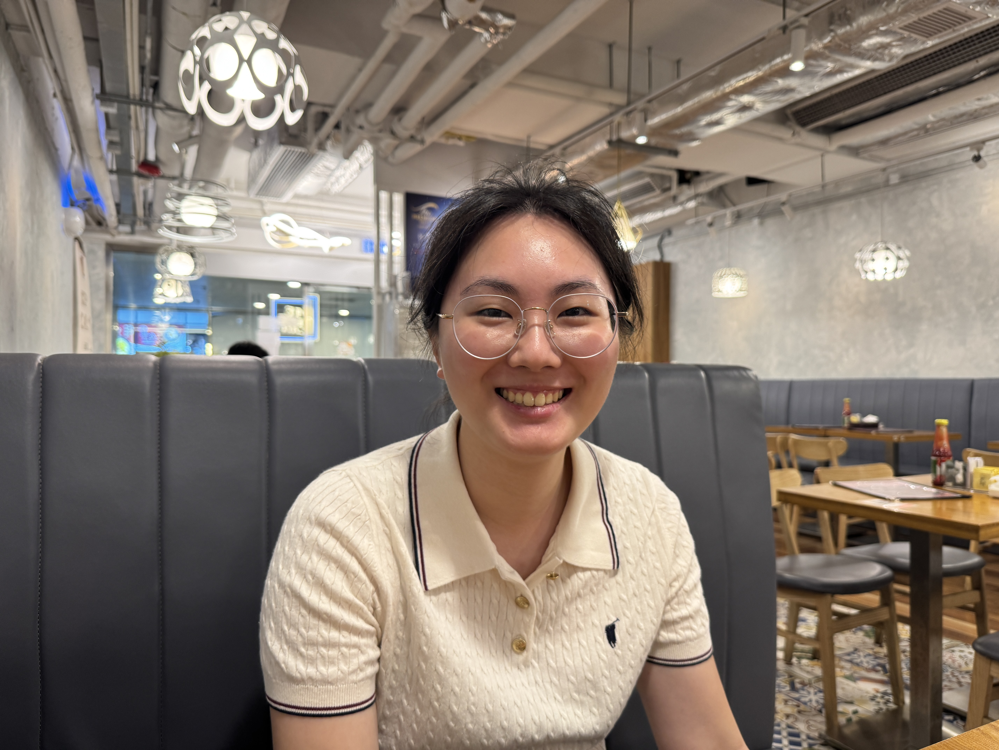

Today's the 5 month celebration of my relationship with my wonderful girlfriend, Daphne. We had a nice dinner at a place called Me Time Cafe at Kowloon Bay, it was some seriously great food at seriously good value. That's not the main reason I'm writing this with tears in my eyes though.
So what was it? Did we get into a fight? Did we break up? That's certainly not the case. Today went just as well as any other day, lots of laughs, silly faces and sounds, and affection that's a little in your face to others. However, tears streamed down my face as I looked at the pictures we took today, pictures of her smile that I've come to be completely mesmerized by.
I cry, because I know her smile is ephemeral in the grand scheme of things.
I cry, because I know my gaze would not be graced with her presence forever.
I cry, because someday we must depart whether we like it or not.
I cry, because I love her more than words can describe and numbers can quantify.
I was obsessed with Astronomy as a child, and I remember being upset when I learned that the Sun was set to expand into a Red Giant more than 250 times its current size in several billion years, engulfing Earth in the process. It felt like humanity's final goodbye, and finality scared me. I even made my parents promise me not to die, but we all know however sincere their promises sounded, it was an impossible ask. This was an impossible ask too, wishing for my girlfriend and I to stay young, for us to be frozen within this day, for her and her smile to stay with me forever.
There is beauty in this transience though. The fleeting nature of her smile reminds me to bring more joy and fun into her life, and our finite lives remind us to treasure what we have. This relationship was the culmination 23 years of love, of coincidences and opportunities, of chance encounters and deliberate rendezvous, of heartbreak and heartache, of ups and downs, until that fateful day when we decided to make our relationship official. 23 years of many butterfly effects, with plenty more years to come.
There may not be another 5 month celebration ever again, but there will be the 6th, the 7th, and so on. Month after month, year after year, I promise I'll fall in love with that gorgeous smile of yours again, and again, and again...

Am I "enough"? When can I be "enough"? These questions have been popping into my head more frequently as of late. I suppose they were a result of a number of things that I've experienced recently.
My Medicine rotation started just about two weeks ago, and to say it has been going poorly would be an understatement. Of all the rotations that we have to go through during our Assistant Internship, this is by far the most daunting one, standing squarely between us and graduating without a hitch. However, despite that looming threat of a poor exam performance, and god forbid a fail, I've not been able to muster up the strength or the discipline to really get into everything I need to study. My foundational knowledge of all the different subspecialties has been utterly insufficient for dealing with questions in the clinical setting, and every single little refresher viva that I have had between myself and my friends have become stinging reminders of my competence or lack thereof.
It's not just Medicine. Given the hectic schedule, I've also shied away from the gym for fear of burning through too much of my time. But who am I kidding? It's not like that time would have been spent really studying anyways given my work ethic. So now my diet is a mess, I've been gaining weight like mad, and the prospect of earning a decent physique by the time I graduate is becoming bleaker by the day. Certainly doesn't help to hear compliments about others' physiques, while I know all too well that I was the only person responsible for all this fat, for a glaring lack of muscles, and chopstick-esque arms.
I've been pushing myself to try harder, but nothing seems to be working anymore. Over the past few months, I've wanted to:
- Start cooking healthier meals in dorm
- Work on my physique to slim down and get more muscle mass and definition
- Learn the basic principles of trading
- Study MBBS harder to get a better hang of the study material
- Work on honing my coding skills to improve my website
- Work on my repsonses to emotions and unintended jabs by other people
- Liase with my alma mater and work on something akin to an alumni academic/career support group
- Complete projects that I've been holding off
I've gotten nothing done. No significant progress towards any of these things.
So I do wonder, am I really enough? Especially when I'm leaving so much on the table in terms of my growth, in terms of my competence, and in terms of my health? Was I ever even a half decent pilot of this vessel that represents me?
Or maybe I do deserve some grace. Grace for the child who did not know better, who was not offered the hindsight that only a lifetime of missteps, errors, and squandered opportunities can provide. Whether I am ready to offer myself an olive branch is something to be decided in the future.
Thank y'all for letting me vent out my midnight miseries. It means a lot.
Imagine your life was compressed into 100,000 pictures, how would those who come after you perceive how you lived? I was given the opportunity to answer this question these past few days when I volunteered to upload backups of my late uncle's pictures onto the cloud.
Growing up, I was never really close to my mother's side of the family. This complex network of uncles, aunts, nieces, nephews, and cousins were spread all across Hong Kong and beyond, and opportunities to meet them at all were generally few and far between, usually isolated to the Chinese New Year gatherings and almost never at any other times. My late uncle had always struck me as quite the resonable and fun, yet stern person. I suppose this could be attributed to his demeanor and background as a prominent figure within the Civil Aid Service. Him and I rarely spoke during family gatherings that we had together, since he was usually occupied with the rest of the folks at the "elders" table, or occupied with whatever was on TV or his phone. He was just a reassuring presence in the family gatherings, someone that I had assumed given his lifestyle would have decades and decades more life to live.
Then came 2023. I was nearing the end of my second year in Medical School, and he had unknowingly started on his tumultuous decline from a disease. Over the next year we witnessed him go through investigation after investigation, treatment after treatment, hospitalisation after hospitalisation, as he withered and withered into a shell of his former self. His once-round face had become sunken with cachexia, and despite his good spirits, I suppose we all knew that he was living on borrowed time. The disease was too much in the end, and he succumbed on May 20, 2024 at just 64 years of age. He had barely made it into retirement when he passed.
After his funeral and with my life becoming increasingly hectic over the years, my memories of him slowly faded to the back of my mind. This was until a coincidence brought me closer to his memory again.
It was now June of 2026, and I was in the middle of my Obstetrics and Gynaecology rotation in my final year in MBBS. I had several weeks of clinical attachments that happened to be situated in PYNEH, and given that my aunt, his wife, happened to live a stone's throw away from the hospital, I reached out to see if I could crash at her place for a few weeks to make travelling to the hospital less of a burden. She was gracious and agreed to let me stay. During our conversations at the dinner table, the topic of her family's old photos had come up. She had told me that they had had a lot of old physical photos that my uncle had digitized and stored on a now-unused desktop computer. Some friends and family members had also reached out before to request copies of those digitised photos as a keepsake in memory of my uncle. Hearing this, and also as an act of gratitude for her accommodation and food, I offered to retrieve all these pictures for her after my exam.

With the computer in my home, it was time to start work on extracting the photos. I'll spare everyone the details, but trying to turn this thing on for long enough to get the pictures I needed was nothing short of torture. The computer fans refused to work at first, and then connecting the computer to the display yielded nothing. Trying different cables and different ports yielded the same result, which was no result. I had to tear the computer open and inspect inside for any legitimate damage before the computer finally showed some promise and showed something on the screen properly. Even after that, uploading the pictures from that computer proved to be too precarious, and I had to resort to spending the few moments that the computer was responsive to move the files to a single hard drive before extracting it.
And there they were, the hundred thousand photos. Photographic evidence of his journey on this little rock we call Earth. Beyond the accolades and the posts he held, beyond the honours and the prizes, I saw the people he loved the most during his time, and the people who had loved him into who he was. I met his classmates and friends from Secondary School, I bore witness to his first steps into the Civil Aid Service Cadet, I watched him and my aunt meet for the first time, and then them dressed lavishly from head to toe as her father walked her down the aisle. I met their children when they were first born, I saw them take their first steps, and waved goodbye as they set off for their first day of school. I tagged along on countless family trips, from Beijing to Phuket. I joined in on gatherings from the Cadet, marched alongside him during their drills, and witnessed my uncle's growth as he took more young cadets under his wing. I toasted him for his retirement, and celebrated with him for his children's graduation. I watched them find love and create families of their own. As the house grew quieter, I sat with him during the nights and watched TV beside him.
And that was it. A hundred thousand isn't a lot in the grand scheme of things. However, he had told me who and what mattered the most to him during his life, what and how we are to remember him after he passes on, and where we can still find him in the people he had loved in his 64 years of life, all without saying a single word to me. Despite our scant conversations, I learned a lot about this uncle of mine. It was a unique privilege to be given the important responsibility of taking care of his pictures after he passed on. I hope he's proud of the work I did.